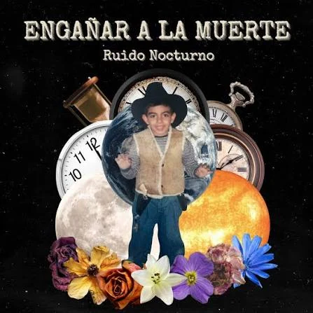

RUIDO NOCTURNO
"ENGAÑAR A LA MUERTE"
El segundo álbum de la banda mexicana liderada por Ari Pichardo: 11 canciones de guitarras intensas y letras introspectivas sobre el paso del tiempo, la nostalgia y el crecimiento personal.

Engañar a la muerte es el segundo álbum de la banda mexicana Ruido Nocturno, liderada por Ari Pichardo. Con 11 canciones llenas de guitarras intensas y letras introspectivas, el disco explora temas de paso del tiempo, nostalgia y crecimiento personal, mantiene la energía del rock alternativo y consolida a la agrupación como referente de la escena independiente.
La producción —a cargo de Fernando Martínez y Pichardo— muestra madurez, mientras las melodías destacan por su coherencia. Engañar a la muerte llega tras los sencillos "Suenan las campanas" (febrero 2026) y "Ritual" (junio 2026), y confirma la trayectoria ascendente del grupo.
Influencias y sonido
Desde su formación en 2021 en la Ciudad de México, Ruido Nocturno ha combinado influencias de rock indie, garage, britpop, post-punk y alternativo. En Engañar a la muerte la banda vuelve a esta paleta sonora con guitarras nítidas y baterías contundentes.
Las letras de Ari Pichardo siguen un estilo narrativo cargado de imágenes y metáforas. Engañar a la muerte aborda el paso del tiempo, la introspección y la confrontación de miedos personales.
Las canciones: nostalgia, autoexploración y esperanza
El tema "Suenan las campanas" habla de la nostalgia y el desengaño: reflexiona sobre cómo la vida va llenando los espacios que planeamos, y sobre el peso de la soledad.
Por su parte, "Ritual" invita a la autoexploración y el cambio constante: alienta a tomar decisiones pequeñas y diarias para crecer, subrayando que "el cambio no ocurre por sí solo, nace de la constancia".
LA IDEA DEL DISCO
"El cambio no ocurre por sí solo, nace de la constancia." Entre el paso del tiempo, la nostalgia y la confrontación de los miedos, Engañar a la muerte encuentra en lo cotidiano la materia prima para crecer.
Otros temas recurrentes son el remordimiento en "Lo que echamos a perder" (arrepentimiento por oportunidades perdidas) y la esperanza al final de "A veces sonrío sin fingir" (la capacidad de encontrar momentos genuinos de alegría). El disco se desliza entre letras íntimas y himnos de guitarra, sin renunciar a su esencia rockera.
Tracklist
ENGAÑAR A LA MUERTE
11 canciones · 2026
- 01Intro al Caos2:54
- 02Caja Negra3:44
- 03No sirve un pretexto3:00
- 04Lo que echamos a perder4:11
- 05Mientras el mundo gira4:09
- 06Eso que te quita el sueño3:33
- 07La hora más oscura2:44
- 08Suenan las campanas2:47
- 09Luz Azul3:15
- 10Ritual4:14
- 11A veces sonrío (sin fingir)—